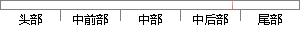

（2）对于时差频差定位问题，本文提出的深度神经网络模型算法实质上是一种机器学习算法，需要在特定的环境下依据大量的样本学习才能获得较为理想的定位结果，怎样将其运用在未知的场景或者通过少量样本就能够快速定位仍然是两个比较困难的问题。
片段位置图

相似结果|
1
原句片段：（2）对于时差频差定位问题，本文提出的深度神经网络模型算法实质上是一种机器学习算法，需
相似片段 1：一个可以学习识别物体的机器,并设计了算法和硬件(...McCulloch和W.A.Pitts提出了M-P模型,之后的1958年...(2)对于深度神经网络很难训练达到最优的问题,可以...
|
※ 片段修改建议 ※
近似词参考：- 对于：对 对付
- 问题：题目
- 模型：模子
- 机器：机械 呆板
- 学习：进修
- 需要：必要
- 环境：情况
- 依据：根据
- 学习：进修
- 才能：才气
- 获得：取得 得到 获取
- 理想：抱负 幻想
- 结果：成果 成绩 成效 后果 了局 效果
- 怎样：如何 怎么 怎么样
- 运用：应用
- 或者：或 大概
- 通过：经由过程
- 少量：少许
- 就能：就可以
- 能够：可以或许
- 比较：比力 对照 对比
- 困难：坚苦 艰巨 难题
- 问题：题目
系统自动生成语句：（2）对时差频差定位题目，本文提出的深度神经网络模子算法实质上是一种机械进修算法，必要在特定的情况下根据大量的样本进修才气取得较为抱负的定位成果，如何将其应用在未知的场景或经由过程少许样本就可以够快速定位仍然是两个比力坚苦的题目。
注：本片段修改建议为系统自动生成，仅供参考。